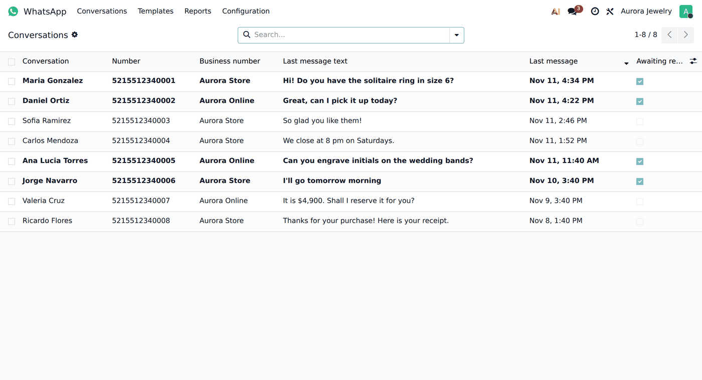
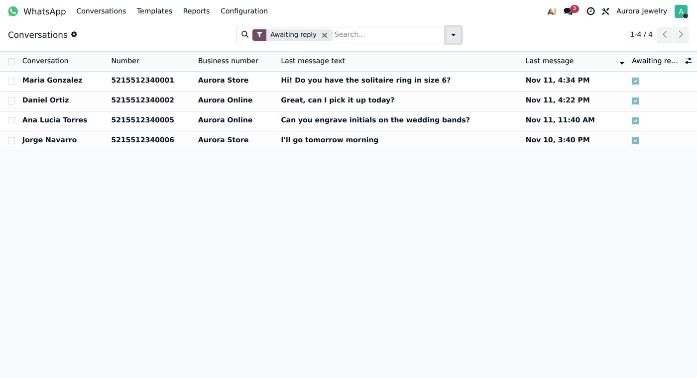
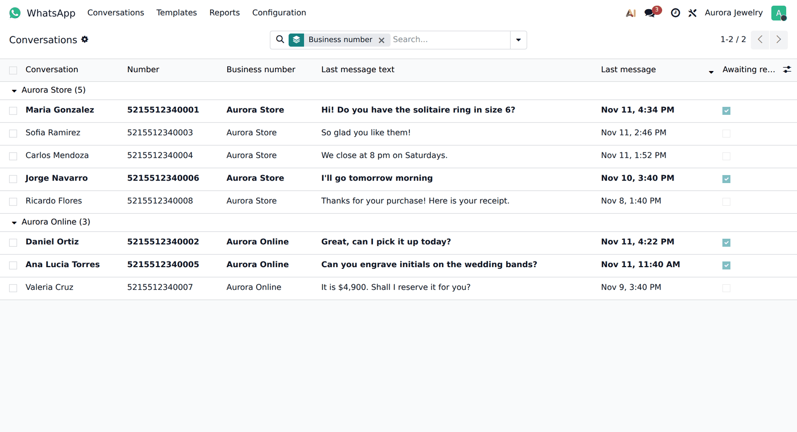
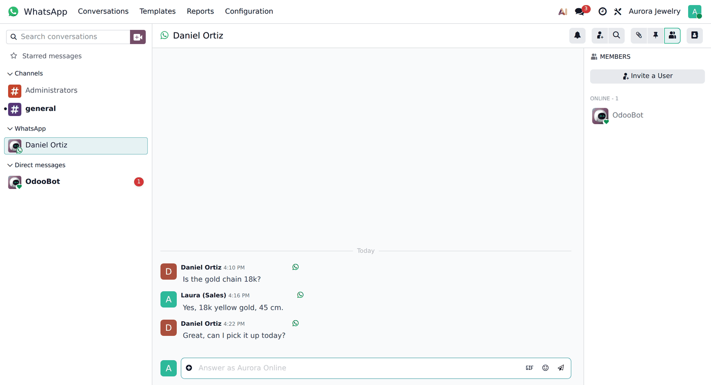
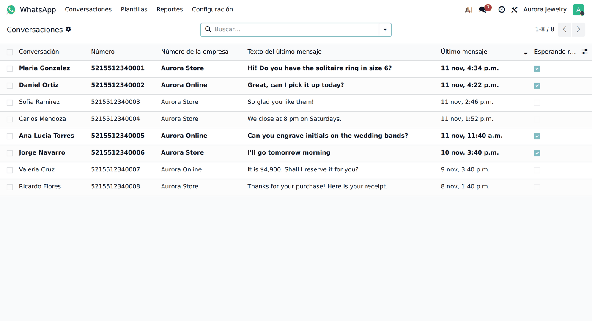

Odoo's WhatsApp menu lists every message on its own row. To know who is waiting for an answer you have to read a log, or open Discuss and scroll chat by chat.
WhatsApp › Conversations: one row per customer, like the inbox of your phone. Contact, number, the business number it came to, the last message and its date. Click a row and the whole chat opens, ready to answer.
Chats where the customer wrote last are shown in bold.

One filter leaves only the customers nobody has answered yet.

Group by business number, contact or day. Search by name, number or contact.

The chat opens in Discuss with its full history. The native message-by-message list moves to WhatsApp › Reports.

Conversaciones de WhatsApp agrupadas: una fila por cliente con su último mensaje, la más reciente arriba y en negritas las que esperan respuesta. Filtro «Esperando respuesta», agrupar por número de la empresa, y clic para contestar. Totalmente traducido al español.

XUBAX · soporte@xubax.com · www.xubax.com